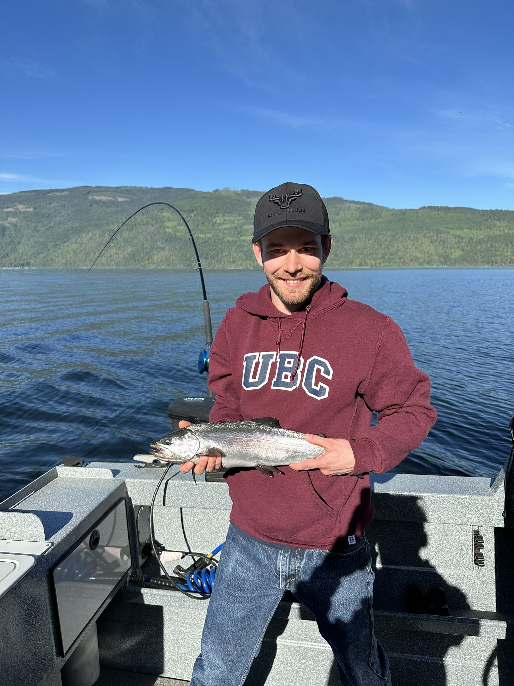
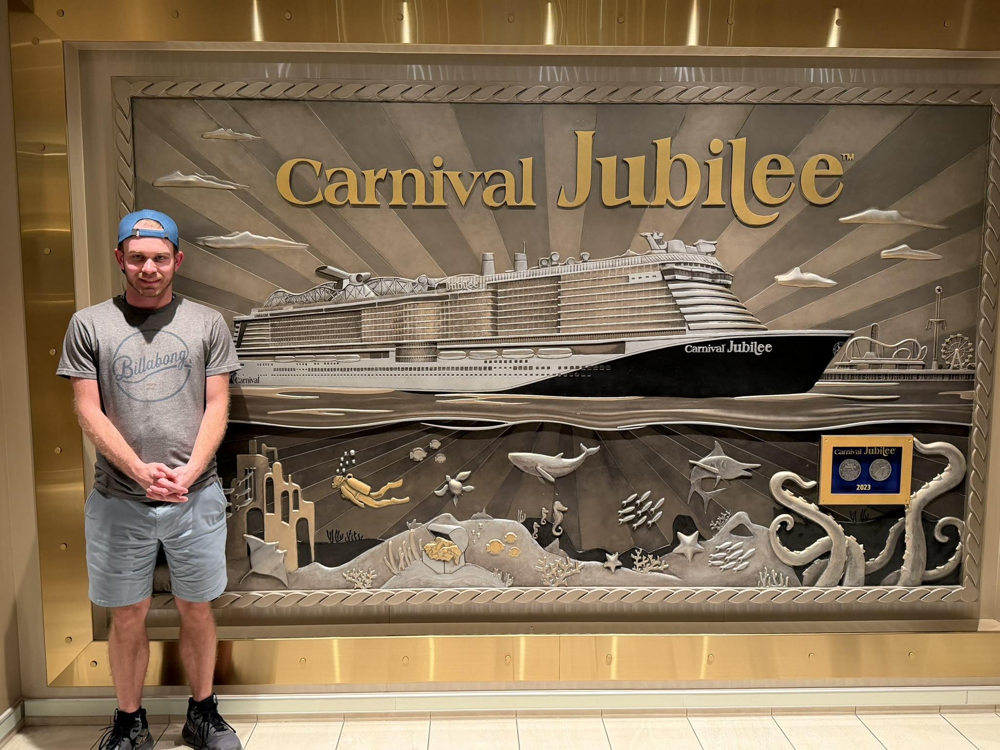

Hackathon / LLM Workflow
caTASKtrophe
Created a business workflow hackathon project that turns incoming requests into structured tasks using an LLM, supports role-based assignment, and lets admins configure reusable department templates.
Computer Science Student
Hi, I'm Ashton, a Computer Science student passionate about building software, solving complex problems, and learning new technologies through hands-on projects.
About Me
I'm a Computer Science student from Vernon with a strong interest in software development, AI, and technical problem solving. What pulled me into computer science was the mix of creativity and structure: you get to design solutions, test ideas, and keep improving how something works.
Outside of class, I enjoy building projects that teach me something practical, whether that's systems programming, logic-heavy problem solving, or front-end work that feels sharp and intentional. Right now I'm focused on growing as a developer by building more complete projects and strengthening the fundamentals behind them.
Projects
Hackathon / LLM Workflow
Created a business workflow hackathon project that turns incoming requests into structured tasks using an LLM, supports role-based assignment, and lets admins configure reusable department templates.
C / Systems
Built a Unix-style shell in C with command parsing, process creation, and execution flow that mirrors a lightweight terminal experience.
AI / Game Strategy
Built a deterministic tournament AI using monte carlo tree search, alpha-beta pruning, and a territory-control heuristic to improve decision quality and overall performance.
Full Stack / E-Commerce
Built a full stack web application with an e-commerce style structure, connecting front-end flows, back-end logic, and data handling into one complete project.
Full Stack / Project Management
Built a full stack project to track project progress, used Smartsheet for monitoring, and delivered weekly sponsor updates to keep progress visible and organized.
Java / AI Logic
Created a logic-based AI solution for a CodinGame challenge, balancing strategy, prediction, and rule-based decision making.
Skills
Work Experience
Sun N Fun Cedar Docks
Alpine Spa Hot Tub Covers
Education
University of British Columbia Okanagan
Dean's List
Okanagan College
Dean's List
Interests
Fishing trips around British Columbia and time outdoors whenever I can get it.

Exploring new places, new environments, and the small details that make each place memorable.

Favorite Quote
"The best way to predict the future is to invent it."
Alan Kay
Contact